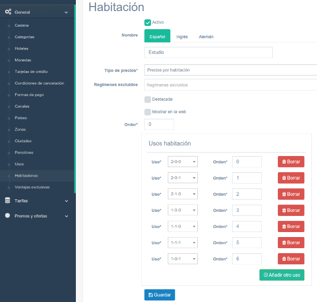
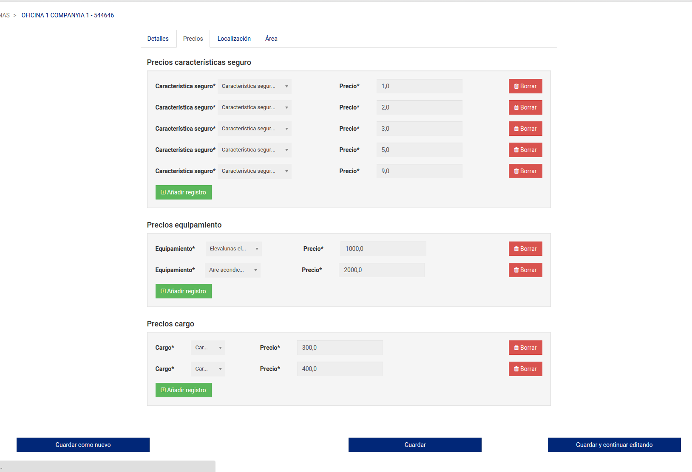

FORMSETS
Andreu Vallbona - Ligthing Talks - Octubre 2015
Notes
Karma
Morenosan
es mi pastor,
nada me falta.
Notes
Introduction
Django extra views ens proporciona una manera fàcil, a través de les seves vistes “vitaminades”, d’implementar els “formsets” per tal d’editar les relacions 1-N amb Django.
pip install django-extra-views
Tambe tenim django-formset-js que ens “dinamitza” a través de Javascript la inserció i eliminació de tuples dels “formsets”.
pip install django-formset-js
INSTALLED_APPS = (
...
'djangoformsetjs',
)
A aquest exemple també es fa ús de Crispy Forms, per tal de millorar l’aparença dels formularis.
pip install --upgrade django-crispy-forms
INSTALLED_APPS = (
...
'crispy_forms',
)
Notes
Basic Formset Example

Notes
Exemple de Formset bàsic pare-fills
Especialment indicat per l'edició de les relacions 1-N
Forms 1
class RoomForm(HotControlBaseForm, forms.ModelForm):
class Meta:
model = Room
fields = (
'hotel', 'active', 'name', 'prices_type', 'boards_excluded',
'highligthed', 'show_in_the_web', 'order')
widgets = {
'hotel': forms.HiddenInput
}
@property
def helper(self):
helper = FormHelper()
helper.layout = self.get_layout()
helper.form_tag = False
helper.label_class = 'col-xs-2'
helper.field_class = 'col-xs-10'
return helper
Notes
Comencem a crear el formulari per a la taula pare
Important fixar la propietat "form_tag=False" per tal que no es mostri el formulari amb el tag "form"
Forms 2
class RoomUseForm(forms.ModelForm):
class Meta:
model = RoomUse
fields = ('id', 'room', 'use', 'order')
@property
def helper(self):
helper = FormHelper()
helper.label_class = 'col-xs-4'
helper.field_class = 'col-xs-6'
helper.form_tag = False
helper.layout = Layout(
'id', 'room', 'use', 'order',
Div('DELETE', css_class='hidden')
)
return helper
Notes
Llavors cream el formulari per editar cadascuna de les tuples de la taula "filla"
Important fixar la propietat "form_tag=False" per tal que no es mostri el formulari amb el tag "form"
Views 1
from extra_views import CreateWithInlinesView, UpdateWithInlinesView, \
InlineFormSet
class RoomUseInline(InlineFormSet):
"""
Class that handles the trough model for room use
"""
model = RoomUse
form_class = RoomUseForm
extra = 0
Notes
Cream la vista que gestiona la taula filla
Heretam de la vista InlineFormset
Comentar la propietat extra es fixa a zero ja que s'afegeixen directament en js de manera dinàmic i no cal que deixem formularis buits al final del formset per tal d'afegir tuples noves
Views 2
from extra_views import CreateWithInlinesView, UpdateWithInlinesView, \
InlineFormSet
class CreateUpdateMixin(HotelSelectedRequiredView, CrsBaseView,
SuccessMessageMixin):
inlines = [RoomUseInline]
model = Room
template_name = 'hotcontrol/crs/room/update.html'
form_class = RoomForm
success_message = _(u'Habitación guardada correctamente')
class RoomCreateView(CreateUpdateMixin, CreateWithInlinesView):
pass
class RoomUpdateView(CreateUpdateMixin, UpdateWithInlinesView):
pass
Notes
Cream la vista que gestiona la taula pare
Per create heretam de CreateWithInlinesView
Per actualitzar heretam de UpdateWithInlinesView
Templates 1
{% block content2 %}
<script src="{{ STATIC_URL }}hotcontrol/js/jquery.formset.min.js"></script>
<form id="form-rooms" method="post" action="." class="form-horizontal">
{% crispy form %}
<div class="x_panel col-md-offset-2 col-md-6">
<div class="x_title"><h4>{% trans 'Usos habitación' %}</h4></div>
{% for formset in inlines %}
<div class="errors">{{ formset.non_form_errors }}</div>
<div class="formset" data-formset-prefix="{{ formset.prefix }}">
{{ formset.management_form }}
<div data-formset-body>
{% for item in formset %}
<div class="formset_item form-inline" data-formset-form>
{% crispy item %}
<button type="button" data-formset-delete-button
class="btn btn-danger"><i class="fa fa-trash">
</i> {% trans 'Borrar' %}
</button>
</div>
{% endfor %}
</div>
<script type="form-template" data-formset-empty-form>
{% escapescript %}
<div class="formset_item form-inline" data-formset-form>
{% crispy formset.empty_form %}
<button type="button" data-formset-delete-button class="btn btn-danger">
<i class="fa fa-trash"></i> {% trans 'Borrar' %}
</button>
</div>
{% endescapescript %}
</script>
<a class="btn btn-success pull-right" data-formset-add>
<i class="fa fa-plus-square-o"></i> {% trans 'Añadir otro uso' %}</a>
</div>
{% endfor %}
</div>
Notes
Renderitzam manualment el formulari
Incloem l'arxiu js necessari
Renderitzem formulari principal
Recorrem i renderitzem els inlines
Per a cada formset fixem el management.form, important per dur el control de les tuples que s'afegeixen i esborren
Fixem botó esborrar per a cada tupla del formset
Cream el template js per tal de crear l'html qual es vulgui afegir una nova tupla
Cream el botó d'afegir nou registre, important la posició on està ja que si hi tinguessim més formsets podria donar problemes si no està ben col.locat.
Templates 2
<br><!-- continues from previous form slide -->
<div class="col-xs-12 col-md-offset-2">
<button class="btn btn-primary" type="submit">
<i class="fa fa-save"></i> {% trans 'Guardar' %}
</button>
</div>
</form>
<script type="text/javascript">
jQuery(function($) {
$(".formset").formset({animateForms: true, reorderMode: 'none'});
});
</script>
{% endblock content2 %}
Notes
Cream el botó per desar tot el contingut, tan formulari pare com formset
Llavors invoquem el js necessari per afegir la màgia del js per tal de dinamitzar el formset
Comentar que també es poden afegir botons de pujar i baixar el model fill te un camp de tipus order, bastaria afegir els dos botons per a cada tupla i activar la funcionalitat en js
Another example

Notes
En aquest cas per qüestions d'usabilitat s'ha organitzat el formulari amb pestanyes
Almost finish
Proudly created with

Landslide and Avalanche
Notes
Thanks
- Thanks to:
- https://github.com/AndrewIngram/django-extra-views
- https://github.com/pretix/django-formset-js
- http://www.morenosan.com/
- https://docs.djangoproject.com/en/1.8/topics/forms/formsets/
- landslide python: https://github.com/adamzap/landslide
- avalanche lanslide theme: https://github.com/akrabat/avalanche